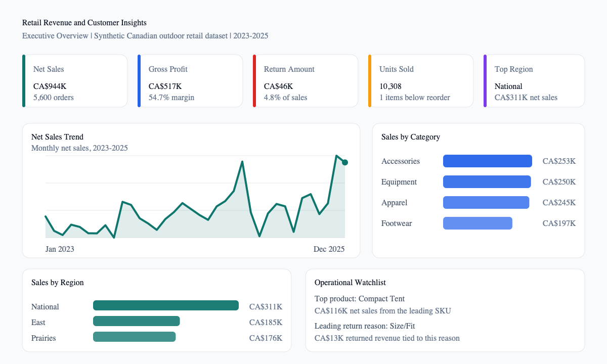

Revenue Quality
Net sales reached CAD 944K with CAD 517K in gross profit, producing a 54.7% gross margin across the three-year dataset.

Power BI Portfolio Case Study
A complete analytics project for a fictional Canadian outdoor retailer, covering revenue, margin, returns, customer segments, campaign performance, and inventory risk.
Executive Readout
Net sales reached CAD 944K with CAD 517K in gross profit, producing a 54.7% gross margin across the three-year dataset.
The National ecommerce channel is the largest regional contributor, generating CAD 311K in net sales.
Accessories leads categories at CAD 253K, while Compact Tent is the strongest individual product at CAD 116K.
Returns total CAD 45.6K, with Size/Fit as the top reason. One product-store combination sits below reorder point.
Semantic Model
The repo includes fact and dimension tables, DAX measures, Power Query typing, SQL validation, and report design notes so the work can be reviewed end to end.
Deliverables
Generated from the source CSVs and shown at the top of this hosted page.
Page-by-page report blueprint with recommended visuals and business questions.
The deliverables folder is ready for the Power BI Desktop file once exported.